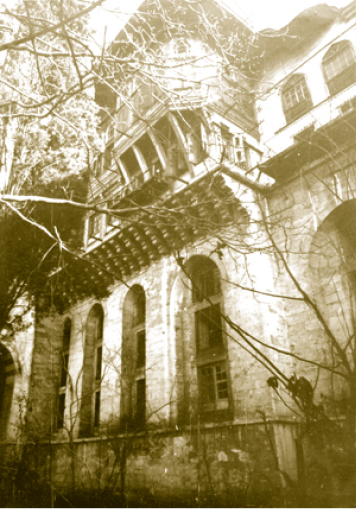
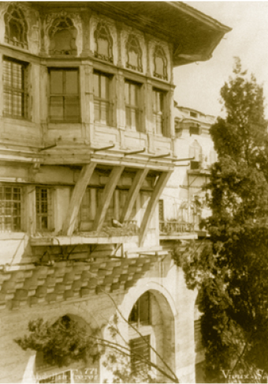
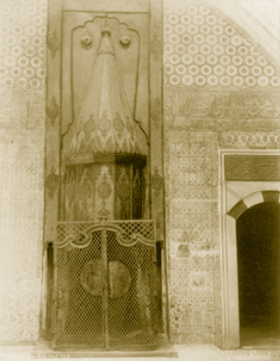
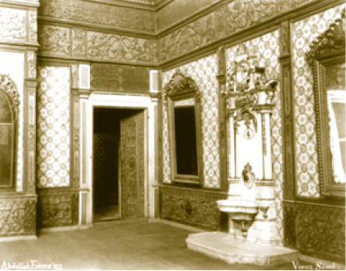
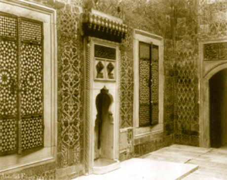
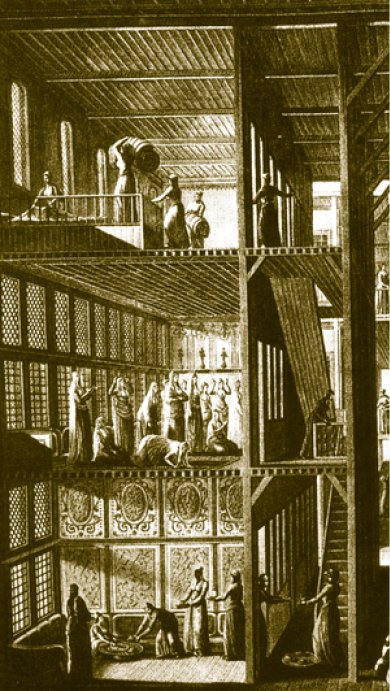

HÜNKÂR DAİRESİ
Hünkâr Hamamı’nın karşısında bulunan kapıdan girilen Hünkâr Dairesi iç içe odalardan ve koridorlardan oluşan bir mekândır. III. Osman, I. Abdülhamid, III. Selim dairelerinin ve yatak odalarının bulunduğu bu kısmın Sultan III. Osman’dan itibaren padişahlarca kullanıldığı bilinir. Sultan III. Osman’dan sonra tahta çıkan Sultan III. Mustafa sayılmazsa birbiri ardına tahta çıkan padişahlarca geliştirilen bir mekândır ki burada son değişikliği Sultan III. Selim yapmıştır.
I. Abdülhamid Has Odası ve Hazine Odası
Hünkâr Hamamı’nın karşısında bulunur. Kapı kitabesinin dış tarafında Sultan III. Osman’ın adı geçmektedir. Bu durum mekânın çeşitli devirlerde ciddi yenilenmeler geçirdiğini ve Sultan III. Osman zamanında da yenilendiğini gösterir. Kapının iç tarafındaki kitabede ise
Melce-i şâhân-ı âlem Han Hamid-i dad-gîr
Nüshâ-i ahlâkına muhtaç yüz bin fasl ü bâb
ifadesi, odanın son olarak Sultan I. Abdülhamid tarafından inşa edildiğini gösterir. Dikdörtgen planlı odanın tavanı düzdür ve koyu yeşil üzerine mavi-kırmızı işlemeli kabartma nakışlarla tezyin edilmiştir. Odanın kapı kanatları son derece itinalı süslerle işlenmiştir. Odaya on iki pencere açılarak aydınlık bir ortam meydana getirilmiştir.
Odanın sol tarafında siyah ve beyaz mermerden bir çeşme bulunur. Çeşmenin ayna taşında,
Çeşme-i dilcû-yı hayat / Câvidan-ı ayn-ı safa
beyiti yazılıdır. Altın yaldızlı ve renkli nakış işlemeli yekpare ocağı muhteşemdir. Odanın sağ tarafında ahşap bir şirvan bulunur. Hükümdarların odalarında bulunan çeşme, ocak ve şirvan; mekânın padişaha ait olduğunu ispatlar bir atmosfer oluşturur.
Salondan sultanın yatak odasına (Taş Oda- Hazine Odası) geçilir. Eskiden Valide Sultan Hamamı koridoruna açılan ve şahsi hazine yahut gardırop alarak kullanılan mekânı Sultan I. Abdülhamid girişi dolap yaptırtıp yeni bir giriş kapısı açtırarak dairesine bağlatmıştır. Böylece yatak odası hâline getirilmiştir. Odanın girişindeki kitabede padişah için bir dua yazılıdır. Tavana doğru hayali manzara resimleri yer alır.
I. Abdülhamid Dairesi’nin Harem için en büyük özelliği bu dairenin bir geçit görevi görmesidir. Buradan III. Osman Taşlığı ve Köşkü’ne, III. Selim Has Odası ve Mihrişah Valide Sultan Daireleri’ne geçişi sağlar. Böylelikle Harem’e yeni eklenen daireler, Harem’in eski mekânları ile irtibatlandırılmıştır.
Kırım’ın kaybedildiği Küçük Kaynarca Antlaşması gibi Osmanlı tarihinin en ağır antlaşmalarından birinin imzalandığı dönemde padişah olan Sultan I. Abdülhamid, Özi Kalesi’nin Rusların eline geçip Rusların Müslümanlara karşı yaptıkları katliamları duyması ile düştüğü derin kederde “… ekdar ve efkarımdan uyku gözlerime haram olmuştur.” dediği günleri bu odada geçirmiş ve yeni bir kalenin daha düştüğü haberini getiren yazının ilk kelimesini okuduktan sonra felç geçirip bu dairede vefat etmiştir. (7 Nisan 1789)
I. Abdülhamid Osmanlı padişahlarının en sulhsever ve hoşgörülü olanıydı. Saray halkıyla olan ilişkileri, hanedana mensup şehzadeler ve hatta veliahtla olan temaslarında da bu görülür. Nitekim yeğeni veliaht III. Selim ile Fransa Kralı 16. Louis arasındaki bir mektuplaşma tespit edildiği hâlde bunu hoş görmüş ve veliahdı bundan dolayı cezalandırmamıştır. Bu gibi izinsiz mektuplaşmaların o devirde ihanet ölçüsünde değerlendirildiği bilinir. Mesela Rusya veliahdı Aleksey’in, babası Çar Büyük Petro tarafından böyle bir sebeple idam edildiği biliniyor.
Döneminin bir sulh dönemi olmasını istemiştir. Fakat maalesef 18. yüzyılda Osmanlı Devleti’nin yaşadığı istihale ve facialar onun da kardeşi III. Mustafa gibi erken vefatına sebep olmuştur.
III. Selim Dairesi (Meşk Odası)
I. Abdülhamid Odası’ndan bir aralıkla geçilen III. Selim Dairesi, ön cepheye sonradan ilave edilmiş bir dairedir. Üç tarafı pencereli olan odanın pencerelerinden birinden III. Osman Köşkü’ne kapı açılmıştır. Türk-Rokoko üslubunu gösteren daire, kare planlı ve ahşap tavanlı olup duvarları yaldızlı kabartmalarla süslemelidir.
Dairenin ocağı meşhurdur. Penceresi olmayan tek duvarı baştanbaşa kaplayan abidevî ocak düzeninin üzerindeki duvar bölümleri manzara resimleriyle donatılmıştır. Ocak nişinde küçük mavi-beyaz Hollanda çinileri kullanılmıştır. Bu çiniler bu ocakta ateş yakılmadığını dışarıdan getirilen ve içinde kor hâline gelmiş ateşin bulunduğu mangalların buraya konulduğunu gösterir.
Üst katta bulunan III. Selim Meşk Odası’na ahşap bir merdivenle çıkılır. Burası Sultan III. Selim’in hat, şiir ve beste çalışmalarını yaptığı bir mekândır. Adını da bu faaliyetlerden alır. Odanın duvarlarında Allah (c.c.), Muhammed (s.a.s.), Aşere-i Mübeşşere (Cennet’le müjdelenen sahabiler) levhaları bulunur. Aynalarının üzerlerinde de Besmele ve ayetler ile III. Selim Han’ın tuğrası ve şu kıta işlenmiştir.
Görmemiş mir’ât-ı hülyasında İskender dahi
Kıl nazar suret-nümâdır benzemez kâr-ı kadîm
Himmet-i şahânesiyle kıldı bu kasrı bina
Rub’-ı meskûnun şeh-i dâd-âveri Sultan Selim
Meşk Odası’nın diğer adı Lihye-i Saadet Odası’dır. Önceleri odayla Hünkâr Sofası arasındaki dolapta Hz. Peygamber’in Sakal-ı Şerif’i bulunduğu için odaya bu ad verilmiştir.
Ferah bir oda olan Meşk Odası, Sultan III. Selim gibi sanat ruhlu bir padişaha derin tefekkür yapma imkânı sunar.
Rivayete göre padişah tahttan indirilince bu dairenin alt katında yaşamış ve ne yazık ki asilerce burada ailesinin gözü önünde öldürülerek naaşı Arz Odası ile Bâbü’s saade arasına atılmıştır.
III. Osman Taşlığı ve Köşkü
III. Osman Köşkü, Hünkâr Sofası’na eklenen en son köşktür. Köşke III. Osman Taşlığı’ndan ulaşılır. Dikdörtgen şeklindeki ferah taşlık yüksek payeli bir teras hâlinde yapılmıştır. Ortasında mermer bir süs havuzu bulunduğu için buraya “Havuzlu Taşlık” da denilir. Çiçek tarhları ile renklendirilmiş olan taşlıkta çiçek masası da yer almaktadır.
Taşlığın Gülhâne Parkı’na bakan tarafında III. Osman Köşkü bulunur. Sultan I. Mahmud tarafından inşasına başlanan köşkün, Sultan III. Osman tarafından tamamlandığı sanılmaktadır. Ancak III. Osman’a ait bir kitabe bulunmamakta, anıt gibi inşa edilmiş kapısı üzerinde Sultan II. Mahmud’un tuğrası ve talik hat ile kaleme alınmış bir beyit bulunmaktadır:
Mihensâz olmağ içün cân evinde bu der-i şevket
Olur âğûş-küşâ Sultân Mahmûd Han’a bî-minnet

1900’lü yıllarda III. Osman Köşkü’nün Gülhane Parkı’ndan görünüşü
Köşkün hünkâr mekânı olduğunu vurgulayan ihtişamlı cümle kapısı yanındaki iki küçük çeşmenin alınlık taşlarında “Mübarek bâd (bâd: olsun)” ve “Saadet bâd” yazılıdır.
Köşk, ortada çıkmalı bir baş oda ve iki yanında birer odadan ibarettir. Gülhâne’ye doğru taşan salon divanhâne olarak düşünülmüştür ki bu da hünkârın burada yaşadığı intibaını güçlendirir. Divanhâne’nin yaldızlı tavanı oldukça süslüdür ve bu süsleme aydınlık ortamla birlikte daha da bir renkli görülür. Köşkün pencereleri Gülhâne Parkı’na bakar.
Ocak karşısındaki oymalı yatak yeri altın yaldızlı sütunlara dayanmaktadır. Salonun iki yanındaki süslemeli odalardan arkadaki alt pencerelerinde çok zarif yaldızlı parmaklıklar ve sık kafesler bulunur.
III. Osman tebdil-i kıyafet ve takma isimle İstanbul’u gizlice teftiş etmekle meşhurdur. Aslında tebdil gezerek etrafın ve toplumun nabzını yoklamak eski bir ananeydi. III. Osman bu ananeyi çok sıklıkla uygulamıştır.

1900’lü yıllarda III. Osman Köşkü’nün Gülhane Parkı’ndan farklı açıdan görünüşü
Ocaklı Sofa
Valide Sultan Taşlığı’ndan Taht (Saltanat) Kapısı ile girilen sofa, adını Harem’de bulunan en büyük ocağın burada bulunmasından alır. Kadınefendiler Dairesi ile Çeşme Sofası arasını kaplayan büyük bir salondur.
Ocaklı Sofa’nın bulunduğu yerde, Şimşirlik’ten gelen meyilli bir yol ile Hasekiler Dairesi’ne oradan Şehzadeler Dairesi’ne çıkılabilirken 1665 yangınından sonra sofa Sultan IV. Mehmed’in emriyle yenilenmiştir.
Kubbeli olan sofa, 17. yüzyıl çinileri ve kalem işi desenler ile süslüdür. Sofaya açılan kapının karşısında bu sofaya adını veren bronzdan yapılmış meşhur ocak yer alır. Ocağın önü altın yaldızlı parmaklıkla çevrilidir. Mabeyn’e ve köşklere çıkartılacak mangallar burada doldurulmaktadır. Sürekli olarak desteklenen ocağa hizmetliler odun yetiştirme telaşı içindedir. Bu ocaktan ateş alınıp mangallarla dağıtıldıktan sonra ocak kilitlenir, daha sonra yeniden açılarak kor hâline gelmiş odunlar mangallara dağıtılırdı.

Ocaklı Sofa’ya adını veren bu ocaktan alınan kor hâline gelmiş odunlar
mangallarla Harem dairelerine dağıtılır, sonra ocak kilitlenirdi.
Duvarların üst kısımlarında Besmele ile “Allahümmensur abdeke ve halifeteke/ Allah’ım kuluna ve halifene yardım et.” duası yazılıdır. Kapı üzerlerinde ise Farsça “Padişah-ı tâ kıyamet devletet efzûn bâd.” “Du metanet şâd ü hürrem duşmenet mahzun bâd.” “Padişahlığın kıyamete kadar yükselerek devam etsin. Sen metin ve bahtiyar ol, düşmanların mahzun olsun.” duası yazılıdır. Padişah evinin bu en orta mekânından padişah dairesine girilebilir. Ayrıca Ocaklı Sofa, Başhaseki ve Şehzadegân Dairelerini de Çeşmeli Sofa yoluyla Hünkâr Sofası’na bağlar. Valide Taşlığı’na geçişi de olduğu düşünüldüğünde ne kadar merkezi bir konumda bulunduğu daha iyi görülür.
Hünkâr Sofası (Muayede Sofası-Büyük Oda)
Hünkâr Sofası Harem daireleri ile Mabeyn arasında bulunan büyük ve ferah bir sofadır. Harem’de padişahların bayramlaşma mekânı, sohbet salonu, düğün, merasim ve kabul salonu olarak kullandıkları mekân, 17. yüzyılda muhtemelen üstü açık olan taşlığın kapatılmasıyla elde edilmiş olmalıdır. Bayramlaşma merasimlerinin zaman zaman burada yapılmasından dolayı Muayede (bayramlaşma) Sofası da denilmektedir.

Hünkâr Sofası’nın bir köşesi
Hünkâr Sofası hakkında bazı yayınlarda Harem eğlencelerinin burada yapıldığı iddiaları vardır. Bazı Huzur Dersleri’nin, şehzadelerin şeyhülislâmdan aldıkları ilk ders olan Bed-i Besmele’nin, mevlid okumalarının, ramazanlarda Kur’an okumalarının yapıldığı ve Kur’an-ı Kerim’den ayetlerle dolu bir mekânla böyle tasvirlerin uyum sağlayamayacağı açıktır.
Hünkâr Sofası’ndan III. Ahmed Yemiş Odası’na, III. Murad Has Odası’na, Hamam Yolu’na, Havuzlu Taşlığa açılan pek çok kapı mevcuttur. Bu durum, buranın taşlık olduğunun da mühim bir delilidir.
Sofada bulunan kapı kanatları kabartma süslemelerle bezelidir.
Harem’in iç içe geçmiş ve dolambaçlı yapıları içinde Hünkâr Sofası oldukça ferahtır ve Harem’in en büyük, en güzel salonudur. Sofayı kaplayan büyük kubbesini kalem işlemeli dört sivri kemer taşır. Büyük kubbenin merkezinde koyu yeşil zemin üzerine yaldızlı hat ile:
“Bismillâhirrahmânirrahim. Elhamdü Lillâhi-el Kerim, er-Rahîm, el-Kadîm, el-Hakîm, el-Azîm, Allahü el-azîz, el-Cebbar / Rahman ve Rahim olan Allah’ın adıyla; Kerîm (İkramda bulunan), Rahîm (Rahmanı bol), Kadîm (Evveli olmayan), Hakim (Her şeyi yerli yerinde vaz eden) ve Azim (en büyük) olan Allah’a hamd olsun. Allah Azîz (Yegâne galip) ve Cebbar’dır (Azametini gösteren)” ifadesi yazılıdır. Duvarlarında mavi zemin üzerine beyaz yazıyla Bakara Sûresi’nin 258, 259, 260 ve 261. ayetleri nefis bir hatla işlenmiştir.
Büyük Kubbe’nin kapladığı orta mekânda Şirvanlı bir taht vardır. Tahtın yerinde günümüzde bir kanepe konulmuştur.
Taşlığa doğru yapılan şirvanın altında sedirler mevcuttur. Şirvan altında işlenen süslemeler göz alıcıdır. Burada bulunan aynalı kapıların biri III. Ahmed Yemiş Odası’na, diğeri ise şirvanın üzerine çıkılan merdivene açılır.
Şirvanın üzeri, camilerde kadınlara ayrılan mahfilleri andırır. Bayramlaşmalar sırasında Harem kadınları merasimi buradan seyrederlerdi.
Sofa yirmi altı pencere ile aydınlık bir ortamdır. Ocak bulunmayan mekânın, hamamdan gelen sıcak suyun sofanın altındaki kanallarda dolaşması ile ısıtıldığı düşünülmektedir.
Sofada üç tane mermer çeşme yer almaktadır. Duvarlarda çok büyük aynalar vardır ki bunlardan bazılarının çerçevesi kendisinden olup kenarları da meyve ve asma dalları figürleriyle süslenmiştir.
Yemiş Odası (III. Ahmed Has Odası)
Hünkâr Sofası ile I. Ahmed Okuma Odası arasında bulunan Yemiş Odası, adını duvarlarındaki meyve figürlerinden almıştır. III. Osman Taşlığı’na bakar. Sultan III. Ahmed tarafından Has Oda olarak inşa edilen bu küçük ve basık oda, padişahların zaman zaman yemek yedikleri bir mekândır. Duvarlarını baştanbaşa kaplayan ahşap panolar çiçek ve meyve resimleri ile doludur. Vazolarda yer alan çiçek demetlerinin altında çeşitli meyve figürleri yer alır. Harem’deki odalarda süsleme olarak çini yerine ahşaba geçilmesi mühim bir değişikliktir. Minyatür üslubunda çizilen figürler Lale Devri’nde Osmanlı resminin Batı’dan etkilenmeye başladığını gösterir.
Ahşap panolar içine aynalar da yerleştirilerek odada değişik bir süsleme tarzı geliştirilmiştir.
Kare odanın taşlığa bakan duvarında alçı kabartmalı bir ocak bulunur. Yemiş Odası Hünkâr Sofası’na ve I. Ahmed Okuma Odası’na birer kapı ile bağlıdır.
I. Ahmed’in eşi ünlü Kösem Sultan’dır. Çok genç yaşta birbirlerini tanıyan ve âdeta birlikte büyür gibi evlenen bu iki güzel gencin çocukları IV. Murad ve I. Sultan İbrahim’dir. Sultan II. Osman, I. Ahmed’in diğer eşinden olma çocuğudur. İki genç hükümdar çiftin I. Ahmed ve Kösem Sultan’ın bilhassa Üsküdar’da Aziz Mahmud Hudai’yi çok ziyaret ettikleri ve dolayısıyla Kösem Sultan’ın bugün Çinili Cami diye bilinen camiini de o semtte bina ettirdiği bilinir. Üsküdar, onların sayesinde bir kere daha önem kazanmış, uhrevi bir semt hâline dönüşmüştür. I. Sultan Ahmed, Osmanlı Sarayı’nda saltanat veraset usulünü de değiştirmiştir. Bundan amaç kardeş katlini önlemektir. Çok genç yaşta olan bu hükümdarın Osmanlı mimari eserlerinin başında gelen ve Batılıların Mavi Cami dedikleri ünlü camiyi inşa ettirdiği ve Ayasofya’nın tam karşısında, Osmanlı zevkinin abideleşmiş hâli olan bu binanın İstanbul’un da Ayasofya ile birlikte silüetini teşkil ettiği malumdur.
Sultan I. Ahmed Has Odası
Sultan I. Ahmed tarafından 1608’de dedesi III. Murad’ın Has Odası’na bitişik olarak inşa ettirdiği oda Fil Bahçesi’ne bakar.
Padişahın burada bir kitap dolabı yaptırmasından hareketle I. Ahmed Mütalaa Salonu veya I. Ahmed Kütüphanesi/Okuma Odası denilmesi galat-ı meşhurdur. 1890’lı yıllarda çekilen fotoğrafların resim altlarında dahi aynı yanlışlık tekrar edilmiştir.
Odanın üzeri küçük bir kubbe ile örtülü olup oda, duvarların kubbeye ulaştığı noktaya kadar bir çini sergisini andıran çeşitlilikte İznik çinilerine sahiptir. Girişin sağında ve karşısında üçer pencere, solda gömme dolaplar ve duvar içine yerleşmiş nefis bir çeşmesi vardır. Pencere ve dolap kapakları ile çekmeceleri sarayın klasik sedef-bağa işçiliğinin güzel örneklerini gösterir.
Çiniler üzerinde sülüs ve nesih hatlar ile yazılmış manzumeler ve dua beyitleri vardır. Kubbenin altında dört tarafta ise Kur’an-ı Kerim’in son dört sûresi (Tebbet, İhlâs, Felak, Nâs) yazılıdır.
13 yaşında padişah olan ve 28 yaşında vefat eden Sultan I. Ahmed’in inşa ettirdiği Sultanahmet Camii, Osmanlı zevkinin abideleşmiş hâlidir. “Bahti” mahlasıyla şiirler de kaleme alan Sultan I. Ahmed, Peygamberimizin ayak izinden (kadem) sorguç yaptırıp ortasına da mavi mine üzerine altınla kendine ait bir dörtlüğü yazmıştır:
“N’ola tâcım gibi başımda götürsem dâim
Kadem-i resmini ol Hazret-i Şâh-ı Rusülün
Gül-i gülzâr-ı nübüvvet o kadem sâhibidir
Ahmedâ durma yüzün sür kademine o gülün”
III. Murad Has Odası (Havuzlu Köşk, III. Murad Kasrı)
III. Murad Has Odası pek çok bakımdan ilk olma özelliği taşıyan bir mekândır. Mimar Sinan tarafından 1579’da yapılan bu köşk sarayda bilinen ilk Hünkâr Odası’dır. Padişahların resmî ve hususi dairesi olarak kullanılmıştır.
III. Murad Has Odası, Mimar Sinan’la birlikte 16. yüzyılda Osmanlı mimarisinin ve sanatının eriştiği zirveyi ve süsleme anlayışındaki derin zevki gösterir. Sarayda bulunan en büyük has odadır ve Harem’in en eski köşküdür. Bu hâliyle Osmanlı mimarisinin ihtişamlı yapılarındandır.
Odaya, Hünkâr Sofası’ndan geçilen Bekleme Odası’ndan, Hünkâr Sofası’ndan ve I. Ahmed Has Odası’ndan girilebilir. Odaya ilk girişte 16. yüzyıl İznik çinilerinin muhteşem kompozisyonu dikkat çeker.
Yazı kuşağı olarak mavi zemin üzerine beyaz renkte bir Ayete’l Kürsi ve “Ya eyyühellezine Amenu” diye başlayan ayetler odayı baştanbaşa dolaşır.
Pencereleri, kubbesi, kapı ve dolap kanatları, ocak ve çeşmesi Osmanlı üslûbunun bir örneğidir. Dolap kapaklarındaki, pencerelerdeki, bordürlerdeki itinalı süslemeler odanın bir padişaha ait olduğunu anlatır şekildedir.
Harem’de örneği bulunmayan anıtvari mermer çeşmenin üç yalağı ve üç musluğu bulunur. Yalaklar odada güzel bir su şırıltısı oluşturmak için düşünülmüştür. Çeşme, çiçek motifleriyle süslenmiştir.
Odanın tac kapısının kanatları sedef, fildişi ve bağa kakmalı olup kapı üzerinde en üstte kelime-i tevhid yazısı, altında ise kitabesi bulunur.
“Emr idüb Hazret-i Sultan Murâd-ı âdil
Yapdılar yümnile bu kasr-ı şerîf oldı tamâm”
şeklinde başlayan kitabesi bu güzel odayı Sultan III. Murad’ın 1578’de yaptırdığını anlatmaktadır.

Harem’de Çeşmeli Sofa’nın bir asır evvelki durumu
Kare planlı olan oda 11 metre çapında oldukça büyük bir kubbe ile örtülüdür. Kubbe’den aşağıya sarkan top, hükümdarın mekânlarından birinde olunduğunu sembolize eder.
Girişin sağ tarafındaki köşelerde oymalı ve altın yaldızla süslemeli ahşap oturma şirvanları vardır. İki şirvanın ortasında büyük bir ocak yer alır. Çini süslemeleriyle kaplı derin pencerelerin odaya kattığı aydınlık zamanla çevresine yapılan yeni has odalar sebebiyle azalmıştır. Bu pencerelerin iki yanında mermer kemercikli üçlü nişler odaya ayrı bir güzellik katmıştır.
III. Murad Has Odası, iki katlıdır. Aynı çatı altında hem yazlık hem de kışlık köşklerin olmasıyla da sarayda başka bir örneği olmayan bir mekândır. Alttaki yazlık (Serdap Köşkü) havuzludur. Hükümdarın yazları kullandığı bu mekânda ortada bir süs havuzu bulunur. Havuzun ortasında yer alan şadırvan, Karaağalar Dairesi’ndeki Şadırvanlı Sofa’dan bir restorasyon sırasında getirilmiş ve burada kalmıştır.
Bu havuzun süt banyosu (!) için kullanıldığı gibi Harem hakkındaki uydurmalar çok yaygın olmakla birlikte kimse böyle bir havuzun kaç ton süt ile doldurulabileceğini düşünmemektedir. Bu havuzda padişahların sandal sefası yaptığını iddia etmek ise ciddiye alınacak bir durum değildir. Çok ilginç olmasa da; suyun bulunduğu ortamın diğer ortamlara göre daha serin olacağından, yazlık bir mekâna havuz yapıldığını düşünmek yeterlidir.
Mabeyn Taşlığı’ndan buraya inilen basamaklar 17. yüzyılda yapılan Çifte Kasırlar’ın altında kaldığı için dehliz içine alınmıştır. Harem’in zifiri karanlık ve gizemli bir odası hâlini almıştır.

Melling’in Harem’i anlatan ünlü gravüründen detay.